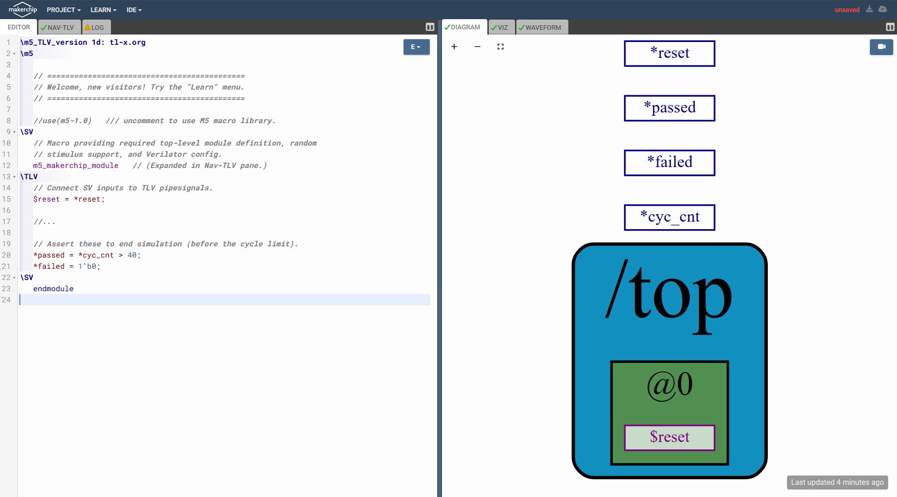
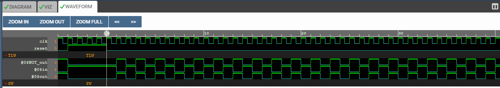
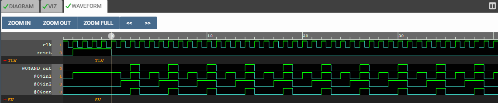
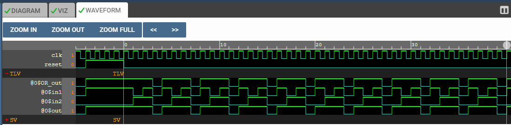
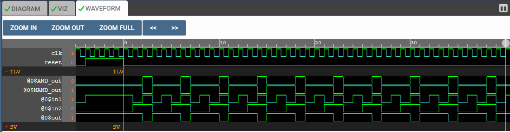
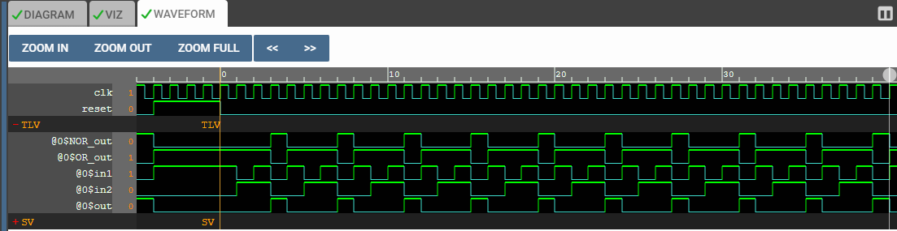
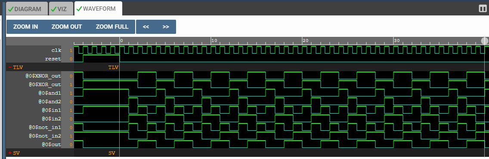

TL-Verilog is useful because it lets you describe intent at the timing and transaction level before dropping into repetitive RTL detail.
This page is a compact course companion focused on the exact mindset needed to understand the RISC-V CPU project.
Move from plain RTL thinking into stage-aware TL-Verilog reasoning.
Best use
Learn this page first, then revisit the RISC-V pipeline page with the language model in mind.
Outcome
You should be able to read staged signals, understand pipeline abstraction, and map it back to generated RTL.
Basics
What makes an HDL different from software languages ?
This section is here to build the right mental model before you jump into TL-Verilog syntax. If you are new to microelectronics, digital design, or VLSI, think of this as the foundation that makes the rest of the page easier to understand.
1. What is a Hardware Description Language ?
A helpful way to think about an HDL is to see it as the bridge between your circuit idea and the tools that help realize it. The same description can be simulated to check behavior and, if it is written in a synthesizable style, pushed toward real digital hardware.
-> A Hardware Description Language, or HDL, is a language used to model, describe, simulate, and synthesize digital electronic systems. In simple terms, it lets you describe both the structure of hardware, meaning how logic blocks connect together, and the behavior of hardware, meaning how signals change over time.
-> That makes HDLs central to modern digital design. You can use them to build a model of a circuit, simulate it to check whether it behaves correctly, and then, if the description is written in the right style, synthesize it into an implementation that can target an FPGA or an ASIC flow.
-> It also helps to remember that an HDL is not a general-purpose programming language wearing different clothes. It is a language designed specifically for hardware work, so its constructs map naturally to things like wires, registers, clocks, and combinational logic.
-> This is why HDL code feels different from ordinary software code. Hardware is naturally parallel and timing-sensitive, so the language has to reflect concurrency, signal interaction, and register-transfer behavior. Real hardware does not execute as one long single-file instruction stream. Many things can happen at the same time, often around the same clock edge.
-> HDLs are used across the whole digital design flow, from behavioral modeling and RTL design to simulation, synthesis, FPGA implementation, and ASIC implementation. TL-Verilog belongs to this family because it still describes real hardware, but it does so with a timing-oriented abstraction that removes a lot of repetitive RTL bookkeeping.
Practical distinction
The simplest useful distinction is this: general-purpose languages can support hardware-related work, but HDLs are written specifically to describe hardware behavior and hardware structure in a form that design tools can simulate and, for synthesizable subsets, turn into logic.
2. Synthesizable vs non-synthesizable context
The key idea here is that not every line of HDL becomes hardware. Only the synthesizable subset can be translated by synthesis tools into a realizable digital circuit. Other constructs still matter because they help with verification, experimentation, and modeling.
-> A very useful beginner distinction is this: some HDL code can be synthesized into hardware, and some HDL code cannot. In the RTL design sense, synthesizable code is the part of the language that a synthesis tool can translate into a circuit made of combinational logic, sequential storage elements, and the interconnect between them.
-> That is what the word synthesizable really means here. It does not just mean that the code can run or be interpreted. It means a tool can derive a corresponding hardware implementation from the description. In practice, that means things like gates, multiplexers, adders, registers, memories, clocked elements, and the wiring needed to connect them.
-> So when you write Verilog, VHDL, SystemVerilog, or TL-Verilog in a synthesizable style, you are not simply telling a processor what to do. You are describing hardware that can be built on an FPGA or carried forward into an ASIC flow.
3. Two broad categories learners should know first
Both families use text-based code, but they aim at different engineering targets. One family tells an existing machine what to do, while the other describes a machine that can actually be implemented.
i. Non-synthesizable / general-purpose software languages
C, C#, C++, Python, Java, and JavaScript are usually used to write software algorithms, applications, drivers, automation, and analysis code. They are powerful and useful, but they are not the normal direct language for describing gate-level or RTL hardware structure.
ii. Synthesizable HDL families and synthesizable subsets
Verilog, VHDL, SystemVerilog, and TL-Verilog are used to describe hardware that can be simulated and, within synthesizable subsets, turned into real digital logic. Analog-oriented dialects exist too, but for a beginner the main focus here is digital hardware description.
4. Why the same statement means different things ?
This is one of the most useful beginner mental splits to keep in mind: in an HDL, the expression helps define hardware structure and signal behavior; in software, the expression is simply one operation executed by a processor that already exists.
In Verilog, if you write assign y = A & B;, you are not just asking a CPU to evaluate a temporary expression. You are describing a continuous combinational relationship. A synthesis tool can infer AND logic that produces y from A and B. If the signals are vectors, the operation becomes a bitwise hardware operation across those widths.
Similarly, in VHDL, a statement like y <= A and B; describes an AND operation in hardware. For multi-bit signals, corresponding bits are ANDed in parallel. That is why HDLs naturally express concurrency and structure. In ordinary software languages such as C, C++, Java, or Python, the same-looking expression is just an operation executed by a processor that already exists. By itself, it does not define a new circuit implementation for synthesis.
5. 10-point difference: HDL vs non-HDL
This comparison is intentionally beginner-focused. It is framed around how these languages behave in a digital design flow, not around every possible research or tool-assisted exception.
Points
HDL / Synthesizable language
Non-HDL / general-purpose language
1
Describes hardware structure or hardware behavior in a form suitable for simulation and often synthesis.
Describes software procedures, algorithms, applications, or data processing steps executed by a processor.
2
Concurrency is natural. Many signals and operations can conceptually exist and update in parallel.
Execution is primarily sequential, even when the language supports threads or asynchronous control constructs.
3
Time, clocks, signal events, and cycle boundaries are fundamental to the model.
Time is usually external to the program logic unless explicitly modeled by the programmer.
4
Synthesizable code can be converted by tools into gates, registers, muxes, memories, and interconnect.
Source code normally compiles into software instructions for a CPU, not into a new hardware circuit.
5
Assignments often express hardware relationships, such as combinational equations or clocked storage updates.
Assignments usually mean storing a computed value in memory during program execution.
6
Signal width, bit slicing, buses, and logic states are first-class concerns during design.
Bit-level control exists, but it is not the default structural model used to create hardware blocks.
7
Verification often asks whether the described circuit behaves correctly over cycles and events.
Verification usually asks whether software control flow, data handling, and outputs are correct for the algorithm.
8
The target implementation can be an FPGA bitstream or part of an ASIC design flow.
The target implementation is usually a runnable binary, bytecode artifact, or interpreted program.
Software performance matters too, but area and gate-level implementation are not usually directly described in the code.
10
A statement such as assign y = A & B; can infer actual combinational AND logic in hardware.
An expression such as y = A & B; in C-like languages only computes a result on an existing processor and does not itself synthesize a fresh logic circuit.
Each point below takes one line from the table and turns it into a short visual mental model so a learner can understand what the difference means in practice.
Point 1
Hardware description vs software procedure
HDL side You write a hardware description that tools can analyze as a circuit model.
Software side You write procedures for a processor to execute one instruction stream at a time.
# NOTE # : HDL is about describing the machine. Software is about instructing a machine that already exists.
Point 2
Parallel hardware vs sequential software flow
HDL side Separate logic paths are active together because the circuit exists all at once.
Software side Statements are usually stepped through in a defined execution order.
# NOTE # : The default mental model for hardware is parallel activity, not a single-file line-by-line script.
Point 3
Time is native in HDL
HDL side Edges, cycles, delays, and signal events are core to how the design is interpreted.
Software side A program can care about time, but time is not inherently the structural language backbone.
# NOTE # : In digital design, asking when something happens is as important as asking what happens.
HDL side Synthesis transforms valid RTL into hardware structures such as logic cells and registers.
Software side Compilation produces code for a processor to run, not a fabricated digital datapath.
# NOTE # : Similar tool words exist in both worlds, but the end products are fundamentally different.
Point 5
An HDL assignment can mean real hardware wiring
HDL side An assignment can establish a persistent hardware relationship between signals.
Software side An assignment usually places a computed value into storage during execution.
# NOTE # : Similar syntax does not imply the same engineering meaning.
Point 6
Bit width and buses are first-class hardware concerns
HDL side Designers constantly reason about widths, slices, concatenation, sign, and bus structure.
Software side Bit operations exist, but they are usually not the primary way complete systems are architected.
# NOTE # : In HDL, bit-level shape is part of the design itself, not just a low-level optimization detail.
Point 7
Hardware verification checks behavior over cycles
HDL side You often verify sequences, protocol timing, hazards, resets, and waveform evolution.
Software side You more often verify returned values, state transitions, and algorithmic correctness.
# NOTE # : Hardware verification is deeply temporal. The timeline is part of the correctness proof.
Point 8
Target hardware artifact vs target program artifact
HDL side The output of the design flow can become configurable logic or silicon implementation data.
Software side The output is typically an executable artifact interpreted or run by a processor environment.
# NOTE # : The destination of the flow changes how you must think about correctness, constraints, and optimization.
Point 9
Area, timing, power, and throughput are design-native
HDL side Resource use and timing closure are direct consequences of what you describe.
Software side Performance still matters, but gate-level area and clock path closure are not the default code outcome.
# NOTE # : Hardware languages force physical tradeoffs into the design conversation much earlier.
Point 10
Same expression, different engineering meaning
HDL side The expression can become literal combinational circuitry.
Software side The expression is a calculation performed by the processor during execution.
# NOTE # : Reading HDL requires asking what hardware this statement implies, not just what value it computes.
About TL-X
Where TL-X fits after the basics
Once you are comfortable with what an HDL is, the next step is to understand where TL-X fits. The important idea is that TL-X is not one single replacement language. It is a higher-level extension framework that can sit on top of multiple target languages.
1. What TL-X means
A good way to think about this is to treat TL-X as the shared higher-level layer. The exact letter after TL- tells you which base language family the processor will eventually target.
TL-X extends existing languages instead of trying to throw them away and start over. That is why the X matters: you can think of it as a placeholder for whichever target language family sits underneath.
So when you see TL-Verilog, read it as TL-X ideas expressed in a Verilog-oriented flow. The same transaction-level way of thinking can also be mapped to other target languages.
Why TL-Verilog is the one we care about here
This course page stays centered on TL-Verilog because the RISC-V CPU work on the companion page is being understood through a Verilog-style digital design flow. For this learning journey, TL-Verilog is the branch of TL-X that connects most directly to the pipeline, signals, and implementation mindset you are building.
2. How to think about it in practice
The key thing to notice here is that you do not lose the normal implementation flow. TL-X simply sits earlier in the path, and a processor lowers that description into native code that existing tools can continue to use.
Best mental model
Think of TL-X as a higher-level place where you can express timing, staging, and transaction intent before the design is lowered into a more native target language.
Why this matters for learners
This helps explain why TL-Verilog can feel shorter and cleaner than hand-written RTL while still mapping back to real hardware implementation.
Important expectation
The TL-X specification is mainly a reference manual. It tells you the constructs precisely, but it assumes you already understand the beginner ideas introduced on this page.
3. Major TL-X version milestones
Let us read the early TL-X versions as a learning story, not just as a release list. As you move from one version to the next, you can see the language getting better at expressing pipelines, stage-relative movement, and cleaner notation.
How to read this section
First, scan the timeline to get the big picture. Then look at the change chips in each card to quickly spot what was added or renamed. After that, read the short summary line to understand why that version matters to someone learning TL-Verilog today.
What kept improving
The pipeline-centered way of thinking stayed important across all versions.
What changed most
Alignment and hierarchy notation kept getting cleaned up so the language became easier to read and more consistent.
Why you should care
If you ever read older examples, do not get discouraged by unfamiliar symbols. In many cases, the core timing idea is still the same.
The best way to read this timeline is as language evolution, not as four unrelated dialects. The central transaction-level and pipeline-aware idea stays in place, while the notation becomes more polished from one version to the next.
TL-X 1a
This is the starting point. TL-X 1a laid down the baseline language extensions and put pipelines at the center of the way you think about the design.
Baseline extensionsPipeline-first focus
This version introduced the baseline language extensions.
Its main focus was pipeline-oriented constructs.
So if you want to understand where the timing-aware TL-Verilog mindset begins, this is the right starting point.
TL-X 1b
This version made state easier to talk about directly, which is a big help when you want the code to reflect persistent hardware behavior more clearly.
Added$StateSigName
State signals were added using the form $StateSigName.
That gave designers a clearer way to describe values that must persist as part of the design state.
TL-X 1c
This is where the language starts feeling more expressive about movement across stages. Alignment syntax changed, and relative pipestage scope became part of the story.
#+3->%+3@++ / @+=
Alignment syntax changed from #+3 after a pipesignal to %+3 before the pipesignal.
Relative pipestage scope was added with @++ and @+=.
In simple terms, this version gave designers more natural ways to describe where things move and how stages relate to one another.
TL-X 1d
This version cleaned up the notation again, so what learners see here starts to look closer to the TL-Verilog style they are more likely to meet in practice.
%+3->>>3>->/
Alignment syntax changed again, from %+3 to >>3.
Behavioral hierarchy syntax changed from > to /.
So if you compare older and newer examples, this is one of the key points where the notation begins to look more familiar to modern learners.
What a beginner should take from this
The main lesson is simple: TL-X kept evolving to make pipeline thinking and timing relationships easier to express. So if an older example looks different at first glance, try to look past the symbols and ask what timing or hierarchy idea it is really expressing.
4. TL-X source code structure
Now let us look at how a TL-X file is organized. This matters because a TL-X source file is not just one flat block of code. It has a recognizable structure, and once you understand that structure, real TL-X examples become much easier to read.
The pattern to remember is simple !! -> A TL-X file begins with a file format line, usually opens in native HDL to define the module boundary, uses TL-X where the hierarchy and pipeline logic live, and then returns to HDL to finish the module definition.
File format line
A TL-X file begins with a file format line. You can think of this as a small header that tells tools which TL-X language version is being used and which target HDL the file is meant for.
HDL regions
HDL regions contain native target HDL code. In practice, a TL-X file is expected to define a module in the target HDL, so it commonly begins with an HDL region that declares the module interface and ends with an HDL region that terminates the module definition.
TL-X regions
TL-X regions are where the TL-X language extension is active. This is where you describe assignment logic in the context of hierarchy, pipelines, and pipestages.
HDL_plus regions
HDL_plus regions let you use the target HDL syntax while still referencing TL-X signals. These regions are useful when manually converting HDL into TL-X, when you need native HDL features not available in TL-X context, or when you need a practical workaround for limitations and tool bugs.
If you are seeing this for the first time, picture a TL-X file as a guided path: a small header tells the tools what kind of file this is, HDL opens the module, TL-X carries most of the design intent, HDL_plus is available when you need a native HDL escape hatch, and HDL closes the module cleanly.
Example you can imagine
Here is a small mental-picture example of how one TL-X file might be laid out. The comments are there only to help you see where each region begins and what role it plays.
// File format line
\\TLV_version 1d: tl-x.org
// Opening HDL region
module cpu_top(input logic clk, reset,
output logic [31:0] instr_out);
logic [31:0] debug_value;
// Main TL-X region
|cpu
@0
$pc = /reset ? 0 : >>1$next_pc;
@1
$instr = /imem[$pc];
// Optional HDL_plus / HDL region area// Use this when native HDL features or legacy HDL content are needed.
assign debug_value = instr_out;
// Closing HDL region
endmodule
One structural habit to remember
"Inside a TL-X region, context comes from scope lines such as hierarchy, pipelines, and pipestages. Each new scope level introduces an indentation of three spaces. So in TL-X, indentation is not just style, it helps show the design context in which assignment statements are being written."
5. How to read a TL-X snippet line by line
Once you know the file structure, the next useful skill is learning how to read a small TL-X snippet without getting lost. The easiest way is to move from the outer context inward: first identify the hierarchy, then the pipestage, and only then read the assignment itself.
The reading trick is to go from outer context to inner meaning. First find the hierarchy, then the stage, and only then interpret the assignment line.
Line 1: |cpu
Start by asking, “What block of the design am I inside ?” Here, |cpu tells you that the following logic is being described in the CPU pipeline context.
Line 2: @0
Next, ask, “At what stage is this work happening ?” The @0 line tells you that the statements indented under it belong to pipestage 0.
Line 3: $pc = /reset ? 0 : >>1$next_pc;
Now read the assignment itself. This says that in stage 0, $pc is set to 0 during reset; otherwise, it takes the value of $next_pc aligned from an earlier stage context using >>1.
Line 4: @1
The context now shifts to the next pipestage. So before reading the next line, update your mental model: you are no longer in stage 0, you are now in stage 1.
Line 5: $instr = /imem[$pc];
This tells you that in stage 1, the instruction value is taken from instruction memory using the program counter. In other words, once the stage context is clear, the assignment becomes much easier to interpret.
Reading habit that helps
When you read TL-X, do not start with the right-hand side expression. First ask: What hierarchy am I in ? What stage am I in ? Then ask: What signal is being defined here ? That order usually makes TL-X code feel much more natural.
Makerchip IDE
The first screen a TL-V learner should understand . . .
Once the learner reaches Makerchip IDE, the page stops being only about reading TL-Verilog and starts becoming a place to write it, compile it, inspect it, and see what the design is doing.
If you search for Makerchip IDE on the web and open it, the first page looks like a split workspace. That split is important because the left side is where you write and inspect text, while the right side is where you see the design respond visually.

A useful first impression is this: the left side helps you write and debug the code, and the right side helps you see what that code turns into.
LHSText and debug side
EDITOR
This is where the learner writes TLV code.
NAV-TLV
Expanded TLV view.
LOG
This is where compile messages, warnings, and errors appear.
RHSVisual and output side
DIAGRAM
A block-level representation of the corresponding HDL-coded structure.
VIZ
A visualization pane used to inspect behavior more intuitively.
WAVEFORM
The waveform view, where the learner can see the graphical output of the synthesized and simulated HDL.
1. EDITOR
The Editor is the learner's primary working area. This is where TLV code is written, sections such as \SV and \TLV are organized, and the first interaction with Makerchip really begins.
The most important beginner realization is that the Editor is not just a plain text box. It is the source of everything else on the page. What appears in the Diagram, VIZ, Waveform, and Log panes begins with what is written here.
\m5_TLV_version 1d: tl-x.org\m5// ============================================// Welcome, new visitors! Try the "Learn" menu.// ============================================//use(m5-1.0) /// uncomment to use M5 macro library.\SV// Macro providing required top-level module definition, random// stimulus support, and Verilator config.
m5_makerchip_module // (Expanded in Nav-TLV pane.)\TLV// Connect SV inputs to TLV pipesignals.$reset = *reset;//...// Assert these to end simulation (before the cycle limit).*passed = *cyc_cnt > 40;*failed = 1'b0;\SV
endmodule
What the learner should notice
The code is divided into language regions such as \SV and \TLV. This is one of the first practical examples of the source-structure idea explained earlier.
Why this matters
The Editor is where the learner writes intent. Everything else in Makerchip reacts to that intent.
Line-by-line reading of this starter file
Read this file as a small conversation with Makerchip. The first few lines declare the dialect and tools being used, the middle lines describe the design intent, and the last line closes the surrounding SystemVerilog wrapper.
\m5_TLV_version 1d: tl-x.org
This is the file-format line. It tells the toolchain which TL-X or TL-Verilog version the file follows. Here, the file says, "interpret me using M5 plus TLV version 1d rules from tl-x.org."
\m5
This opens an M5 region. M5 is the macro and preprocessing layer used by Makerchip. If a file needs Makerchip-specific macros or helpers, this region is where they live.
Blank lines and banner comments
The empty lines are only for readability. The welcome banner comments do not change behavior; they are just guidance for the learner using the template.
//use(m5-1.0)
This is a commented-out directive. If you uncomment it, the M5 macro library is enabled. In other words, the file is saying, "I can pull in the M5 helper library if I need those macros."
\SV
This switches into a SystemVerilog region. From this point until the next region marker, the lines are interpreted as plain SystemVerilog rather than TLV.
The macro comment above m5_makerchip_module
This comment explains why the next line exists. It tells the learner that the macro will create the top-level module shell, some simulation plumbing, and Makerchip-friendly configuration automatically.
m5_makerchip_module
This macro expands into the required top-level module definition. Instead of writing the full Verilog module header by hand, the template uses a macro so the beginner can focus on the design logic first.
\TLV
This switches into the TL-Verilog region. Now the file is no longer defining plain RTL syntax line by line; it is expressing timing and signal intent using TLV constructs.
The comment // Connect SV inputs to TLV pipesignals.
This comment tells you the next assignment is a bridge from the SystemVerilog world into the TLV world.
$reset = *reset;
This copies the incoming SystemVerilog signal *reset into the TLV pipesignal $reset. A simple way to read it is: "take the external reset pin and make it available as a TLV signal inside the design."
//...
This means more design logic normally appears here. The template hides the middle part so the learner can focus on the file structure first.
The pass/fail comment
This comment explains that the next two lines control when the simulation should stop early instead of waiting for a maximum cycle count.
*passed = *cyc_cnt > 40;
This drives the pass flag high once the cycle counter becomes greater than 40. In plain words: "after enough cycles have elapsed, declare success."
*failed = 1'b0;
This permanently keeps the fail flag low. The template is effectively saying, "this starter example has no failure condition yet."
\SV before endmodule
This switches back into SystemVerilog because endmodule is normal Verilog syntax, not TLV syntax.
endmodule
This closes the module created earlier by the Makerchip macro expansion. Conceptually, the file started by opening a top-level hardware wrapper and ends by closing it here.
The simplest mental model
The file says: choose the TLV version, enter Makerchip macro mode, open a SystemVerilog wrapper, switch into TLV to describe behavior, set pass or fail conditions for simulation, then switch back to SystemVerilog and close the module.
Visual flow of the same snippet
If the raw code feels dense, use this reading order. Each box answers one simple question: what mode am I in right now, and what is this part of the file trying to do?
Editor view versus NAV-TLV view
This is the key teaching moment for Makerchip. In the Editor, you write the compact version meant for humans. In NAV-TLV, Makerchip shows a more explicit version so you can see what the tools are really working with.
What stayed the same
The core design intent stayed the same: the file still moves from a Verilog wrapper into a TLV region, connects reset, and drives pass or fail outputs.
What changed
The compact macro-based shorthand became a more explicit module form. NAV-TLV exposes details that were hidden in the friendlier Editor view.
Why this is useful
When a beginner asks, "what did Makerchip actually generate here?" this side-by-side comparison answers that question immediately.
Best habit to build
Write in the Editor first, then glance at NAV-TLV whenever a macro, directive, or generated wrapper feels mysterious.
Callouts directly on the code
Use this when you want to point to one line and say exactly what job it does. The arrows are there to slow the eye down and help the learner notice the role of each directive and signal.
How to use this visual
First read the code top to bottom. Then scan only the callout boxes on the right. Finally, come back to the code and try to say the purpose of each highlighted line in your own words.
2. NAV-TLV
NAV-TLV is best understood as an expanded TLV view. It helps the learner see what macros and certain higher-level constructs look like after expansion, which is very useful when something in the Editor feels a little too abstract.
For a beginner, this pane is a bridge between what was typed and what the tool is actually working with internally.
What NAV-TLV helps you see
It shows how some Makerchip and M5 conveniences expand into more explicit underlying code.
Why beginners should care
If something written in the Editor feels magical or hidden, NAV-TLV often helps remove that mystery.
3. LOG
The Log pane is where the learner sees what the toolchain is telling them. This includes product information, file generation, warnings, statistics, compiler activity, and simulation status.
This is also where you learn an important engineering habit: do not look at errors only when something fails. The Log also tells you what was generated, what was ignored, and what the tools inferred.
INFORM(0) (PROD_INFO):
SandPiper(TM) 1.14-2022/10/10-beta-Pro from Redwood EDA, LLC
INFORM(0) (FILES):
Reading "top.m4"
Translated HDL File: "top.sv"
Generated HDL File: "top_gen.sv"
HTML TLX File: "top.html"
Simulation Visualization File: "top_viz.json"
WARNING(1) (UNUSED-SIG):
Signal $reset is assigned but never used.
INFORM(0) (STATS):
SandPiper generated 15% of your HDL code.
Simulating and tracing...
Simulation PASSED!!!
What this pane teaches
The Log does not just report errors. It shows translation results, generated artifacts, warnings, statistics, and final pass/fail status.
What a beginner should notice first
Start by looking for warnings, generated files, and the final simulation result. Those three clues already tell you a lot about what happened.
4. DIAGRAM, VIZ, and WAVEFORM
The right-hand side is where Makerchip becomes visually rewarding. This side helps the learner see what the code means rather than only reading lines of text.
DIAGRAM
This pane gives a block-level view of the design structure. It is especially useful when the learner wants to connect TLV code to modules, signals, and stage-level structure.
VIZ
This pane gives a more learner-friendly visualization of the behavior or structure, helping the user move from abstract code to a more intuitive picture.
WAVEFORM
This pane shows the waveform of the corresponding simulated HDL. In practice, this is where the learner can inspect graphical signal behavior over time.
Why the RHS matters
The left side helps you write and debug. The right side helps you see and verify. Together, they make the learning loop much faster.
5. What to click first in the LEARN menu
For a first-time learner, the LEARN menu should not feel like a giant menu tree. Think of it as your guided entry point into the IDE. The goal is not to open everything. The goal is to click the first thing that reduces confusion and builds momentum.
Start here: Tutorials
If the learner is completely new, LEARN -> Tutorials is the best first click. It gives a structured path instead of expecting the learner to explore the whole IDE alone.
Then try: Examples
After a first guided walkthrough, LEARN -> Examples becomes useful because the learner can see working code and connect it to the panes already explained on this page.
Use Courses when you want a bigger pathLEARN -> Courses is helpful when the learner wants a more complete study flow instead of only a quick first experiment.
Use Specs later, not first
The specification links in the LEARN area are important, but they are usually not the best first click for a beginner. They are better used after the learner already knows how the IDE feels and what the panes are doing.
A practical first-click strategy
Open Makerchip IDE, look at the split panes, then go to LEARN -> Tutorials. That gives the learner a guided starting point before they begin experimenting more freely with the Editor, Nav-TLV, Log, Diagram, VIZ, and Waveform panes.
Small, runnable snippets you can paste into Makerchip's Editor to see TLV in action.
Inverter (NOT gate) — TLV Warm Up !
Paste this into Makerchip's Editor (set the file dialect to TLV version 1d if asked), run the simulation, and open the Waveform pane to watch the input toggle and the output invert.
\m5_TLV_version 1d: tl-x.org
\m5
// ============================================
// Welcome, new visitors! Try the "Learn" menu.
// ============================================
//use(m5-1.0) /// uncomment to use M5 macro library.
\SV
// Macro providing required top-level module definition, random
// stimulus support, and Verilator config.
m5_makerchip_module // (Expanded in Nav-TLV pane.)
\TLV
// Connect SV inputs to TLV pipesignals.
//$reset = *reset;
$in = *cyc_cnt[0]; // toggling input
$NOT_out = !$in;
$out = $NOT_out;
// To avoid UNUSED-SIG warning
`BOGUS_USE($out)
//...
// Assert these to end simulation (before the cycle limit).
*passed = *cyc_cnt > 40;
*failed = 1'b0;
\SV
endmodule
DIAGRAM
WAVEFORM

Line-by-line understanding
This TL-Verilog block defines a simple piece of logic and a basic simulation flow. The \TLV directive tells the compiler the following code is TL-Verilog. The commented //$reset = *reset; would normally connect a SystemVerilog reset signal, but here it is unused. $in = *cyc_cnt[0]; samples the least-significant bit of Makerchip's built-in cycle counter, making $in toggle every clock. $NOT_out = !$in; inverts that value. $out = $NOT_out; drives an output. The backtick macro `BOGUS_USE($out) silences unused-signal warnings. Finally, *passed = *cyc_cnt > 40; ends the run as a pass after 40 cycles and *failed = 1'b0; keeps failure low.
How to run this in Makerchip (quick steps)
Open Makerchip IDE and paste the snippet into the Editor pane.
Ensure the file dialect mentions TLV 1d.
Click Simulate / Run and wait for translation and simulation to finish.
Open NAV-TLV to inspect expansion and WAVEFORM / VIZ to see the signal activity.
AND gate — TLV Warm Up !
Paste this into Makerchip's Editor (choose TLV 1d if prompted), run the simulation, and open the Waveform pane to see the two inputs and the ANDed output.
\m5_TLV_version 1d: tl-x.org
\m5
// ============================================
// Simple AND gate example in TL-Verilog
// ============================================
\SV
// Top-level module macro
m5_makerchip_module
\TLV
// Define two toggling inputs
$in1 = *cyc_cnt[0]; // toggles every cycle
$in2 = *cyc_cnt[1]; // toggles every 2 cycles
// AND operation
$AND_out = $in1 & $in2;
// Output assignment
$out = $AND_out;
// Avoid UNUSED-SIG warning
`BOGUS_USE($out)
// End simulation after 40 cycles
*passed = *cyc_cnt > 40;
*failed = 1'b0;
\SV
endmodule
DIAGRAM
WAVEFORM

Line-by-line understanding
This TL-Verilog code begins with \m5_TLV_version 1d: tl-x.org and \m5, which specify the TL-Verilog dialect and enable Makerchip macros for easier simulation and top-level module generation. The m5_makerchip_module macro creates a top-level SystemVerilog module that includes support for random stimulus and simulation hooks, allowing the code to run in Makerchip or Verilator.
Inside the TL-Verilog section, two input signals are defined: $in1 = *cyc_cnt[0] and $in2 = *cyc_cnt[1]. These inputs use bits from the built-in cycle counter, so $in1 toggles every cycle and $in2 toggles every two cycles, producing all combinations of 0s and 1s for the AND gate.
The line $AND_out = $in1 & $in2 computes the logical AND of these two inputs, storing the result in $AND_out. This result is then assigned to the output signal $out = $AND_out, making $out the final output of the AND gate. Since $out is not connected to any further logic in this simple example, the line `BOGUS_USE($out) is included to suppress the compiler warning about an unused signal.
Finally, the simulation control lines *passed = *cyc_cnt > 40 and *failed = 1'b0 specify that the simulation should end successfully after 40 cycles, and that it never fails, providing a simple fixed-duration test of the AND gate logic. Overall, the code produces a functional 2-input AND gate, drives it with toggling test signals, and safely completes a 40-cycle simulation without compiler warnings.
How to run this in Makerchip (quick steps)
Open Makerchip IDE and paste the snippet into the Editor pane.
Ensure the file dialect mentions TLV 1d.
Click Simulate / Run and wait for translation and simulation to finish.
Open NAV-TLV to inspect expansion and WAVEFORM / VIZ to see the signal activity.
OR gate — TLV Warm Up !
Paste this into Makerchip's Editor (choose TLV 1d if prompted), run the simulation, and open the Waveform pane to see the two inputs and the ORed output.
\m5_TLV_version 1d: tl-x.org
\m5
// ============================================
// Simple 2-input OR gate example in TL-Verilog
// ============================================
\SV
// Top-level module macro
m5_makerchip_module
\TLV
// Define two toggling inputs
$in1 = *cyc_cnt[0]; // toggles every cycle
$in2 = *cyc_cnt[1]; // toggles every 2 cycles
// OR operation
$OR_out = $in1 | $in2;
// Output assignment
$out = $OR_out;
// To avoid UNUSED-SIG warning
`BOGUS_USE($out)
// End simulation after 40 cycles
*passed = *cyc_cnt > 40;
*failed = 1'b0;
\SV
endmodule
DIAGRAM
WAVEFORM

Line-by-line understanding
This TL-Verilog code begins by specifying the TL-Verilog version and enabling Makerchip macros with \m5_TLV_version 1d: tl-x.org and \m5. The m5_makerchip_module macro generates a top-level SystemVerilog module that supports simulation and random stimulus.
Within the TL-Verilog section, two input signals, $in1 and $in2, are assigned to bits 0 and 1 of the built-in cycle counter, so $in1 toggles every cycle and $in2 toggles every two cycles, producing all combinations of 0 and 1.
The OR operation is performed with $OR_out = $in1 | $in2, and the result is passed to the output signal $out = $OR_out. Because $out is not used elsewhere in this simple example, the `BOGUS_USE($out) line prevents the compiler from issuing an unused-signal warning.
Finally, the simulation is set to end successfully after 40 cycles with *passed = *cyc_cnt > 40 and to never fail with *failed = 1'b0, allowing a short, controlled simulation of the OR gate behavior.
How to run this in Makerchip (quick steps)
Open Makerchip IDE and paste the snippet into the Editor pane.
Ensure the file dialect mentions TLV 1d.
Click Simulate / Run and wait for translation and simulation to finish.
Open NAV-TLV to inspect expansion and WAVEFORM / VIZ to see the signal activity.
NAND gate — TLV Warm Up !
Paste this into Makerchip's Editor (choose TLV 1d if prompted), run the simulation, and open the Waveform pane to see the two inputs and the NAND output.
\m5_TLV_version 1d: tl-x.org
\m5
// ============================================
// 2-input NAND gate using NOT + AND in TL-Verilog
// ============================================
\SV
// Top-level module macro
m5_makerchip_module
\TLV
// Define two toggling inputs
$in1 = *cyc_cnt[0]; // toggles every cycle
$in2 = *cyc_cnt[1]; // toggles every 2 cycles
// AND operation
$AND_out = $in1 & $in2;
// NOT operation to create NAND
$NAND_out = !$AND_out;
// Output
$out = $NAND_out;
// To Avoid UNUSED-SIG warning
`BOGUS_USE($out)
// End simulation after 40 cycles
*passed = *cyc_cnt > 40;
*failed = 1'b0;
\SV
endmodule
DIAGRAM
WAVEFORM

Line-by-line understanding
This TL-Verilog code starts by specifying the version and enabling Makerchip macros using \m5_TLV_version 1d: tl-x.org and \m5. The m5_makerchip_module macro generates the top-level module, providing simulation support and hooks.
Two input signals, $in1 and $in2, are assigned to bits 0 and 1 of the built-in cycle counter, causing $in1 to toggle every cycle and $in2 to toggle every two cycles, producing all combinations of 0 and 1.
The line $AND_out = $in1 & $in2 computes the AND of the two inputs. To create the NAND gate, the AND output is inverted with $NAND_out = !$AND_out. This result is assigned to the final output $out = $NAND_out. Since $out is not used elsewhere, the `BOGUS_USE($out) directive prevents an unused-signal warning.
Finally, the simulation is set to run for 40 cycles using *passed = *cyc_cnt > 40 and will never fail with *failed = 1'b0. This produces a functional 2-input NAND gate with a controlled testbench for simulation.
How to run this in Makerchip (quick steps)
Open Makerchip IDE and paste the snippet into the Editor pane.
Ensure the file dialect mentions TLV 1d.
Click Simulate / Run and wait for translation and simulation to finish.
Open NAV-TLV to inspect expansion and WAVEFORM / VIZ to see the signal activity.
NOR gate — TLV Warm Up !
Paste this into Makerchip's Editor (choose TLV 1d if prompted), run the simulation, and open the Waveform pane to see the two inputs and the NOR output.
\m5_TLV_version 1d: tl-x.org
\m5
// ============================================
// 2-input NOR gate using NOT + OR in TL-Verilog
// ============================================
\SV
// Top-level module macro
m5_makerchip_module
\TLV
// Define two toggling inputs
$in1 = *cyc_cnt[0]; // toggles every cycle
$in2 = *cyc_cnt[1]; // toggles every 2 cycles
// OR operation
$OR_out = $in1 | $in2;
// NOT operation to create NOR
$NOR_out = !$OR_out;
// Output
$out = $NOR_out;
// To Avoid UNUSED-SIG warning
`BOGUS_USE($out)
// End simulation after 40 cycles
*passed = *cyc_cnt > 40;
*failed = 1'b0;
\SV
endmodule
DIAGRAM
WAVEFORM

Line-by-line understanding
This TL-Verilog code starts by specifying the version and enabling Makerchip macros with \m5_TLV_version 1d: tl-x.org and \m5. The m5_makerchip_module macro generates a top-level SystemVerilog module with simulation support.
Two input signals, $in1 and $in2, are assigned to bits 0 and 1 of the built-in cycle counter, so $in1 toggles every cycle and $in2 toggles every two cycles, producing all possible input combinations.
The line $OR_out = $in1 | $in2 computes the logical OR of the two inputs. To implement the NOR gate, the OR result is inverted with $NOR_out = !$OR_out. The final output is then assigned as $out = $NOR_out. Because $out is not connected to other logic in this simple example, the `BOGUS_USE($out) macro prevents an unused-signal warning.
Finally, the simulation control lines *passed = *cyc_cnt > 40 and *failed = 1'b0 specify that the simulation should end successfully after 40 cycles and never fail, providing a controlled test of the NOR gate behavior.
How to run this in Makerchip (quick steps)
Open Makerchip IDE and paste the snippet into the Editor pane.
Ensure the file dialect mentions TLV 1d.
Click Simulate / Run and wait for translation and simulation to finish.
Open NAV-TLV to inspect expansion and WAVEFORM / VIZ to see the signal activity.
XOR gate — TLV Warm Up !
Paste this into Makerchip's Editor (choose TLV 1d if prompted), run the simulation, and open the Waveform pane to see the two inputs and the XOR output.
This TL-Verilog code implements a 2-input XOR gate using basic logic operations. It begins by specifying the TL-Verilog version and enabling Makerchip macros, while the m5_makerchip_module macro generates the top-level module with simulation support.
Two inputs, $in1 and $in2, are derived from different bits of the cycle counter so that they toggle at different rates and produce all input combinations. The inputs are first inverted using $not_in1 = !$in1 and $not_in2 = !$in2.
Then two intermediate AND operations are computed: $and1 = $in1 & $not_in2 and $and2 = $not_in1 & $in2, which correspond to the cases where the inputs differ. These results are combined using an OR operation $XOR_out = $and1 | $and2 to produce the XOR functionality. The result is assigned to the output signal $out = $XOR_out. Since $out is not used elsewhere, the `BOGUS_USE($out) macro is included to suppress unused-signal warnings.
Finally, the simulation is configured to pass after 40 cycles using *passed = *cyc_cnt > 40 and never fail with *failed = 1'b0, allowing a simple verification run of the XOR logic.
How to run this in Makerchip (quick steps)
Open Makerchip IDE and paste the snippet into the Editor pane.
Ensure the file dialect mentions TLV 1d.
Click Simulate / Run and wait for translation and simulation to finish.
Open NAV-TLV to inspect expansion and WAVEFORM / VIZ to see the signal activity.
XNOR gate — TLV Warm Up !
Paste this into Makerchip's Editor (choose TLV 1d if prompted), run the simulation, and open the Waveform pane to see the two inputs and the XNOR output.
\m5_TLV_version 1d: tl-x.org
\m5
// ============================================
// 2-input XNOR gate example in TL-Verilog
// ============================================
\SV
// Top-level module macro
m5_makerchip_module
\TLV
// Define two toggling inputs
$in1 = *cyc_cnt[0]; // toggles every cycle
$in2 = *cyc_cnt[1]; // toggles every 2 cycles
// Invert inputs because XOR = A'.B + A.B', then XNOR = NOT(XOR)
$not_in1 = !$in1;
$not_in2 = !$in2;
// AND Gate for XOR parts
$and1 = $in1 & $not_in2; // A.B'
$and2 = $not_in1 & $in2; // A'.B
// OR Gate to get XOR
$XOR_out = $and1 | $and2; // A'.B + A.B'
// NOT Gate to get XNOR
$XNOR_out = !$XOR_out; // NOT(A'.B + A.B')
// Output
$out = $XNOR_out;
// To Avoid UNUSED-SIG warning
`BOGUS_USE($out)
// End simulation after 40 cycles
*passed = *cyc_cnt > 40;
*failed = 1'b0;
\SV
endmodule
DIAGRAM
WAVEFORM

Line-by-line understanding
This TL-Verilog code implements a 2-input XNOR gate using basic logic operations. Two inputs, $in1 and $in2, are assigned to bits 0 and 1 of the cycle counter so they toggle at different rates, producing all combinations of 0 and 1. The inputs are first inverted as $not_in1 = !$in1 and $not_in2 = !$in2. Two intermediate AND operations, $and1 = $in1 & $not_in2 and $and2 = $not_in1 & $in2, identify the cases where the inputs differ, which are combined using OR to compute the XOR result: $XOR_out = $and1 | $and2. The XOR output is then inverted with $XNOR_out = !$XOR_out to produce the XNOR output. This result is assigned to $out = $XNOR_out. Since $out is not otherwise used, the `BOGUS_USE($out) directive suppresses compiler warnings. Finally, the simulation is set to end successfully after 40 cycles using *passed = *cyc_cnt > 40 and to never fail with *failed = 1'b0, providing a controlled test of the XNOR gate.
How to run this in Makerchip (quick steps)
Open Makerchip IDE and paste the snippet into the Editor pane.
Ensure the file dialect mentions TLV 1d.
Click Simulate / Run and wait for translation and simulation to finish.
Open NAV-TLV to inspect expansion and WAVEFORM / VIZ to see the signal activity.
Roadmap
A practical order to learn TL-Verilog
Do not start with every language feature. Start with the small subset that explains a pipelined CPU clearly.
Step 01
Understand pipeline stages
Learn how stage notation groups work by time. In a CPU, fetch, decode, execute, memory, and writeback are the natural first anchors.
Always ask which registers, muxes, and controls are implied. TL-Verilog is most valuable when you can still picture the resulting hardware structure.
Question to ask each time:
Which stage owns this value ?
Which earlier stage produced it ?
When does it become architecturally visible ?
Syntax Core
The small syntax set that matters first
These are the constructs that make the RISC-V project readable. Master these before touching advanced macros or generators.
Stage markers
Use stage markers like @0, @1, and @2 to show where work logically happens in time.
Why it matters ?
A pipelined CPU stops feeling like five disconnected code islands and starts reading like one timed flow.
What to watch for ?
If a signal appears in the wrong stage, your mental timing model is already drifting.
Stage-relative references
References like >>1 or values reused from earlier stages let you express pipeline movement directly rather than instantiating every register transfer by hand.
Why it matters ?
You can trace dependencies cleanly across the pipeline.
What to watch for ?
Be explicit about where data becomes valid so hazards do not get hidden by nicer syntax.
Small, runnable TLV snippets demonstrating basic combinational logic. Start here with a 1-bit Half Adder.
1-bit Half Adder — TLV Example
Paste this into Makerchip's Editor (choose TLV 1d if prompted), run the simulation, and open the Waveform pane to observe Sum and Carry outputs produced from two toggling inputs.
\m5_TLV_version 1d: tl-x.org
\m5
// ============================================
// 1-bit Half Adder [COMBINATIONAL LOGIC]
// ============================================
\SV
m5_makerchip_module
\TLV
// Inputs
$A = *cyc_cnt[0]; // toggles every cycle
$B = *cyc_cnt[1]; // toggles every 2 cycles
// XOR -> (Sum)
$sum_out = ($A & !$B) | (!$A & $B); // Sum = A XOR B
// AND -> (Carry)
$carry_out = $A & $B; // Carry = A AND B
// To Avoid unused signal warnings
`BOGUS_USE($sum_out)
`BOGUS_USE($carry_out)
// End simulation after 40 cycles
*passed = *cyc_cnt > 40;
*failed = 1'b0;
\SV
endmodule
DIAGRAM
WAVEFORM
Line-by-line understanding
This TL-Verilog example uses Makerchip's built-in cycle counter to generate two toggling inputs. The Sum is implemented as an XOR (A & !B) | (!A & B) and the Carry as an AND (A & B). `BOGUS_USE` directives prevent unused-signal warnings. The simulation is configured to pass after 40 cycles.
How to run this in Makerchip (quick steps)
Open Makerchip IDE and paste the snippet into the Editor pane.
Ensure the file dialect mentions TLV 1d.
Click Simulate / Run and wait for translation and simulation to finish.
Open NAV-TLV to inspect expansion and WAVEFORM / VIZ to see Sum and Carry activity.
Worked Examples
Read TL-Verilog like an engineer
Each example below ties the language directly to what your CPU page is already showing in its architecture and execution sections.
Instruction fetch path
The fetch stage is usually the easiest place to get comfortable because it has obvious time ordering: current PC, memory access, next PC selection.
Decode prepares operands, execute combines them, and later stages commit the result. TL-Verilog makes that separation visible with much less boilerplate.
These are the right next steps if the goal is to get from reading TL-Verilog to using it in the RISC-V project confidently.
Exercise 1: Stage audit
Task
Pick one instruction and label exactly where fetch, decode, execute, memory, and writeback occur.
What you should learn ?
You will stop reading the code as plain text and start reading it as timed hardware behavior.
Exercise 2: Hazard review
Task
Take a load-use sequence and mark the cycle when the loaded data becomes safe for the dependent instruction.
What you should learn ?
Better syntax does not remove hazards. It only makes the timing story easier to inspect.
Study Loop
How to use this with the CPU page ?
Read this course page once, then return to the RISC-V dossier and compare its pipeline, execution trace, and code views against the stage concepts introduced here.
Next Step
Go back and inspect the project
The course matters only if it improves your reading of the real design. Use the project page to test whether the timing, dataflow, and control logic now feel more legible.